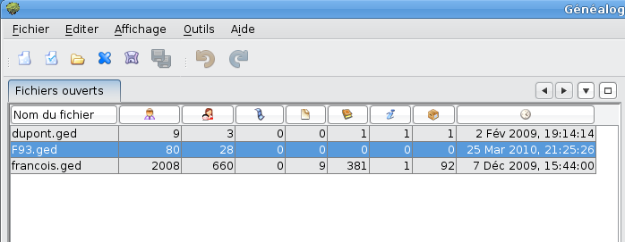

Menu de gestion des fichiers gedcom
Cette fenêtre est un peu particulière par rapport aux autres fenêtres. C'est elle qui vous montre les fichiers gedcom qui sont ouverts.
Sur la capture d'écran ci-dessous, trois fichiers de généalogie sont ouverts en même temps. Vous pouvez travailler sur chacun d'eux à votre guise.

Chaque fichier gedcom est représenté sur une ligne avec plusieurs indications :
- Le nom du fichier gedcom,
- Le nombre d'Individus présents dans votre généalogie,
- Le nombre de Familles présentes,
- Le nombre d'éléments multimédias,
- Le nombre de Notes,
- Le nombre de Sources,
- Le nombre de fournisseurs d'information,
- Le nombre de lieux de dépôts.
- Et enfin, la date de dernière modification de votre fichier gedcom.
Cette fenêtre, à l'inverse des autres fenêtres de l'application, ne peut pas être "déancré" (elle ne peut pas être individualisée, détachée du restant de l'application). Elle ne peut pas être fermée individuellement non plus.
Dans certains cas il peut être utile de minimiser cette fenêtre pour ne pas qu'elle prenne de la place qu'il est important de garder pour les autres fenêtres. Vous allez donc la parquer (ou docker en anglais).
Une fonction existe pour positionner ce gestionnaire des fichiers gedcom en position latérale, sur le côté gauche.
Pour ce faire, mettez votre curseur de souris sur le titre de la fenêtre, et faites glisser la fenêtre du gestionnaire vers la gauche. A un moment, vous allez voir qu'un cadre se forme sous l'aspect d'un bouton rectangulaire. Relachez votre souris, un bouton se forme dans le cadre gauche avec en titre "Fichiers ouverts".

Si maintenant vous placez votre souris sur le bouton qu'est devenu le gestionnaire de fichiers gedcom, il s'ouvre un petit menu à son ancienne place avec un point noir (pin ou aiguille). Cliquez sur le point noir, et votre gestionnaire de fichiers gedcom retrouve sa place.

Vous pouvez aussi utiliser cette fonction, à savoir placer votre souris sur le bouton créé à gauche pour que s'ouvre la fenêtre du gestionnaire et ainsi naviguer entre vos fichiers gedcom. Il n'est pas besoin de déparquer le menu pour y réussir. C'est une fonction très puissante de l'application.